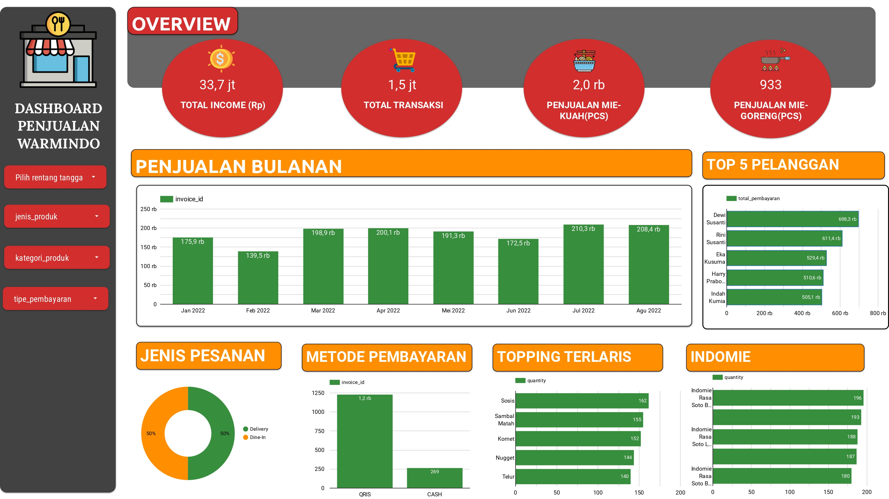

ANALISIS DATA WARUNG INDOMIE
Tentang Data : Data ini merupakan data penjualan dari Warmindo (Warung Makan Indomie) di Indonesia. Data ini mencakup berbagai transaksi yang terjadi di Warmindo, termasuk jumlah produk yang terjual, harga, dan total pendapatan. Data tersebut dikumpulkan dari berbagai sumber Warmindo dengan metode pencatatan transaksi yang terdokumentasi.
Tools Analisis : Python & Looker Studio
Data : Download Data
Dashboard : Look At The Dashboard
WORLD CLOUD
Summary : 1. Penjualan Bulanan : Kita bisa melihat penjualan bulanan di Warmindo itu relatif stabil, ada yang memang pada bulan tertentu penjualannya itu meningkat seperti di bulan Juli. Dalam hal ini harus mempersiapkan dan memperhatikan stok sajian di warung Warmindo. 2. Top 5 Pelanggan : Kita bisa berikan penawaran terhadap mereka untuk brand ambasador lauching menu terbaru, promo-promo dan testimoni dari warung kita(Warmindo). 3. Jenis Pesanan & Metode Pembayaran : Untuk Jenis Pesanan selama pridode tertentu itu masih seimbang antaran Delivery & Dine-In. Dalam hal ini kita tidak perlu cemas akan mempersiapkan tempat untuk pelanggan yang Dine-In, tetapi harus ada sesuai yang di butuhkan saja. Untuk Metode Pembayaran yang dilakukan oleh pelanggan itu sangat mendominasi dengan menggunakkan pembayaran QRIS. Sedangkan metode pembayaran CASH itu perhitungannya jauh di bawah QRIS. Dalam hal ini pelanggan kita itu peka akan perkembangan zaman dan kemungkinan pelanggan kita di dominasi oleh anak muda. Sedangkan yang CASH bisa jadi pelanggan yang masih belum mau untuk mengikuti perkembangan zaman dan teknologi. 4. Topping & Varian Indomie : Dari Top 5 penjualan terlaris utuk Topping & Varian Indimie, kita bisa mix untuk membuat menu baru, kemudian kita juag bisa berikan menu paket hemat untuk pelanggan dan juga kita bisa berikan promo menarik untuk pelanggan dari penjualan Top 5 antara Topping & Varian Indomie.